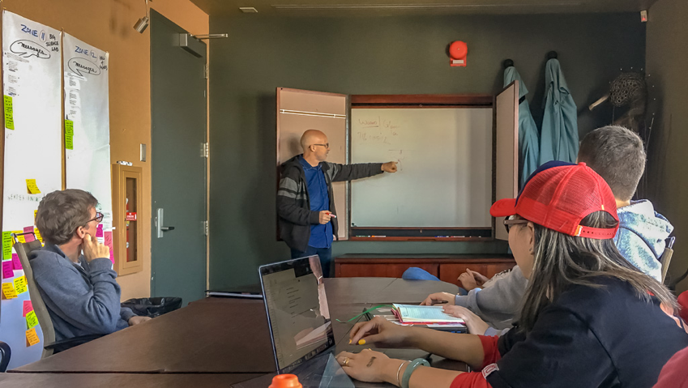
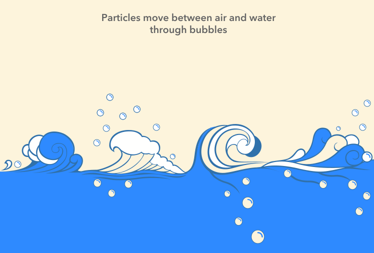
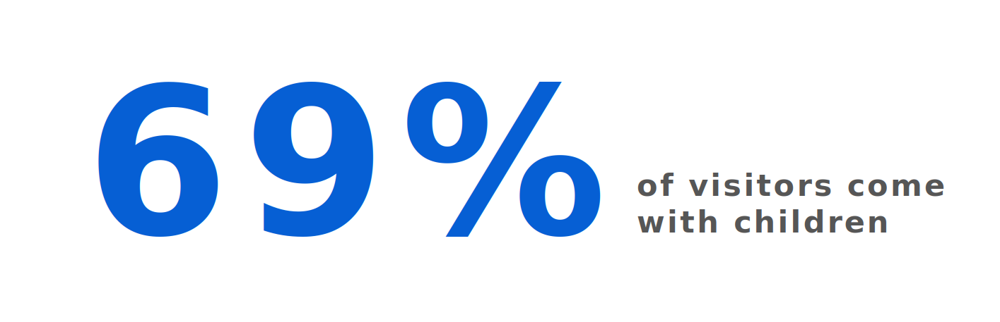
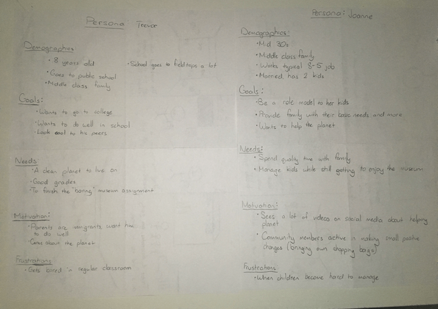
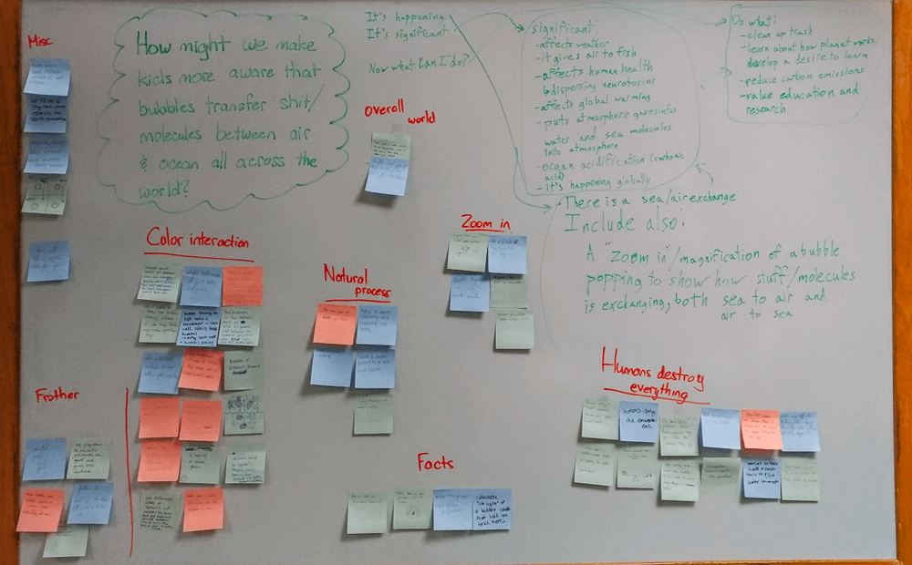
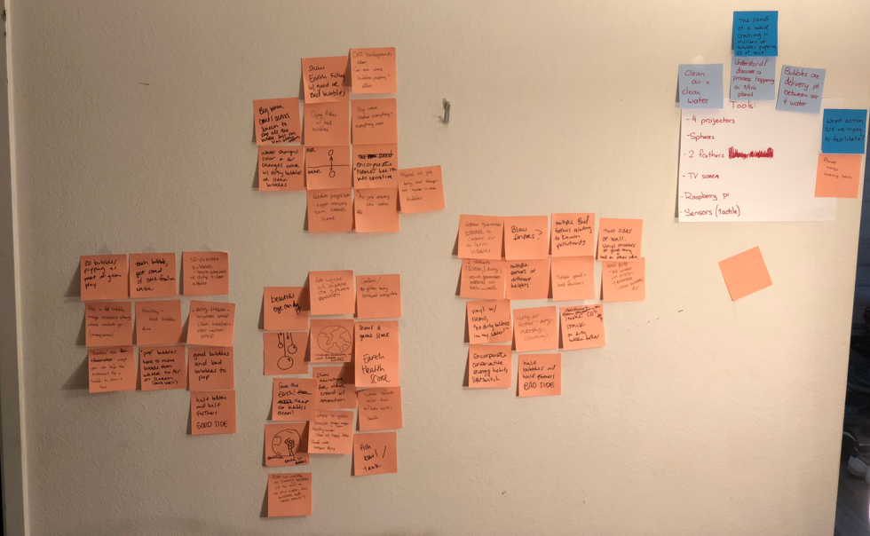
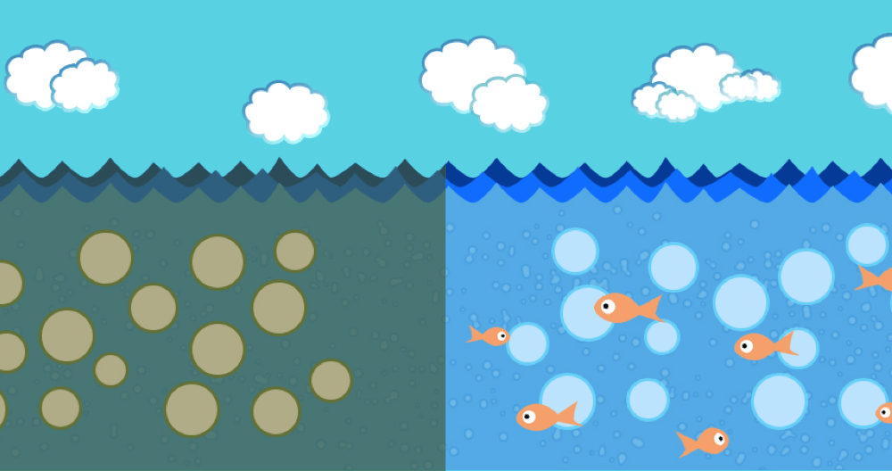
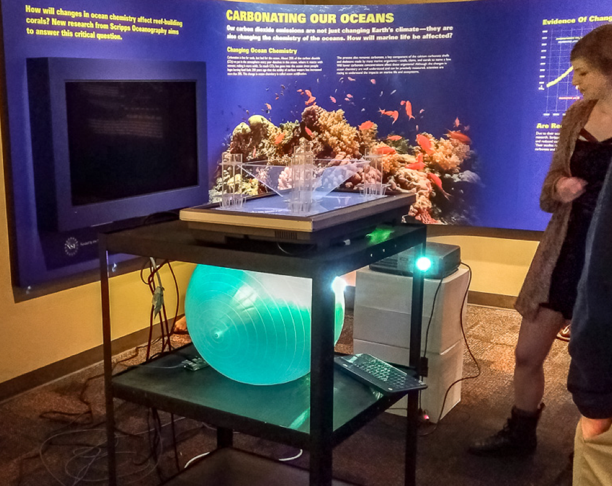

Timeline: Jan - Mar 2017
Employment Type: Academic Credit
My Role: UX Designer
Tools: Figma, Python
Skills: UX Research, Interaction Design, Prototyping
The Birch Aquarium is the public exploration center for The Scripps Institute of Oceanography, one of the oldest and largest facilities for ocean and Earth science research. The aquarium invited a team of students consisting of artists, designers, and engineers to build an interactive exhibit about bubbles, driven by the research of scientists Dale Stokes and Grant Deane.
Bubbles are more than just pretty clumps of water- they serve as the transfer agent between ocean and atmosphere. It’s a process constantly occurring all over the world. Waves push gas under the ocean’s surface and bubbles eject particles from beneath the ocean into the air when they explode.
Grant dropping knowledge bombs
Carbon emissions and pollution are changing the way gases move between the ocean and air. Dale and Grant are trying to teach how reducing our human impact can benefit this natural, cyclical process.
Bubbles mediate particle transfers
The aquarium supplied us with an abundant amount of quantitative data on their attendees. A majority of visitors were either younger than 15 or older than 35. Our clients wanted this new exhibit to target younger visitors because elementary field trips make up a large part of the daily traffic.
Some Stats
The first task was to do some field observations to learn more about our visitors’ behaviors. The team also interviewed Birch researchers who had knowledge around how guests experience, interact with, and interpret the different exhibits.
Observations

Personas
Problem Statement: "How might we teach kids that bubbles transfer molecules between the atmosphere and ocean all across the world?".
The biggest obstacle was balancing our design goals while still allowing the artists to express their own personal styles. For example, the lead professor had many abstract ideas but we had to remind him that children would not understand the lesson we are trying to teach. Constantly referring back to the problem statement was useful in getting the team aligned.
Whiteboard session
A notable constraint was that we could only use the tools available in the Art & Technology Lab at UCSD. Being a multidisciplinary team with experience in holograms, LED lights, programming, and sound manipulation, we tackled the challenge in many creative and diverse ways.
Narrowing Ideas
We narrowed on ideas related to 3D projections and sensors then presented a low fidelity prototype to the Birch faculty. The first prototype was made with Pygame, simulated in a Raspberry Pi which was hooked up to a touch sensitive sensor. Every time the sensor was triggered, bubbles would form at the bottom of the interface. The vision was to show how clean or dirty bubbles expel their contents into the air when they touch the surface of the ocean. We would eventually add sensors to create waves that drag particles from the air down into the ocean.
Visuals
The researchers loved the idea but wanted us to build on it. They wanted us to dive deeper into how the molecule transmission occurs- to elaborate on the process of how bubbles explode. We eventually narrowed on using a 3D projection to showcase the lifecycle of a bubble in slow motion.
Scrappy prototyping

Experimenting with 3D projections
At the end of the course quarter, we set up an exhibit to showcase our ideas to visitors at the Birch Aquarium. It was a great opportunity to observe how visitors would react to our ideas in context. There were a few pivots along the way, the main one being the incorporation of a bubble cluster hologram on top of the slow motion bubble projection. The intent was to emphasize that this reaction is happening at scale. In total there were 3 prototypes being showcased and tested- the Pygame, hologram, and 3D projection.
Pygame Prototype
3D Projection Prototype
Hologram Prototype

Overall the visitors felt a disconnect between all of the
prototypes. They felt that each one was their own exhibit. We needed
to have more visual cohesion & styling for the next iterations. We
also needed to improve the interaction with the Pygame prototype.
Instead of a circular motion, an up and down movement similar to
splashing water might’ve been more effective
Although many of us wanted to stay and continue to work on this
project, we could only take this class once. We handed all the work
to our professor, who would continue the project with a new batch of
students the following quarter. I’m stoked to have been in the pilot
for this interactive course- it’s by far one of my favorites at
UCSD.
Persona avatars were designed by Lluisa Iborra from the Noun Project

EventQR
A web app that lets users create & scan events encrypted into a QR code, which can be synced onto their Google Calendar.

Workday
Redesigning the global conclusion interface and mobile animations.